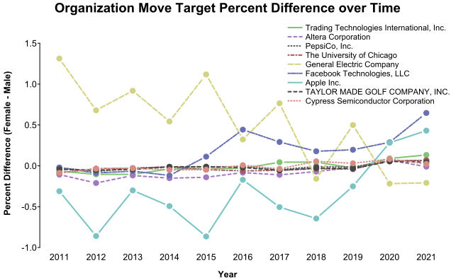
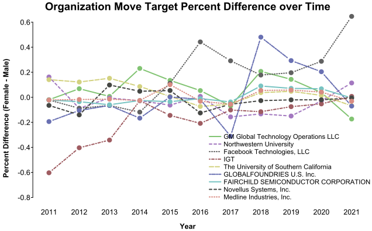

example-patentsview_inventors_p2.RmdBuilt with R 4.2.1
In the previous example we assigned sex to inventors and took a high-level look at some differences between sex groups.
This example focuses on inventors that were active in the last year, and tries to take a deeper look at group differences.
library(uspto)
outDir <- "../patentsview/"We’ll start by collecting a unified set of patents with inventors who were associated with a patent in 2021:
latest_inventors_file <- paste0(outDir, "latest_inventors.csv.xz")
if (file.exists(latest_inventors_file)) {
latest_inventors <- vroom::vroom(latest_inventors_file, show_col_types = FALSE)
} else {
# 1. identify patents granted in the most recent year
patents <- download_patentsview_bulk("patent", outDir, make_db = TRUE)
latest_patents <- as.character(dplyr::collect(dplyr::select(
dplyr::filter(patents, date > as.Date("2020-12-31")), number
))$number)
# 2. identify the inventors associated with those patents
patent_inventors <- download_patentsview_bulk(
"patent_inventor", outDir,
make_db = TRUE,
partition = list(series_code = function(d) substr(d$patent_id, 1, 2))
)
latest_inventors <- dplyr::collect(dplyr::select(dplyr::filter(
patent_inventors, patent_id %in% latest_patents
), inventor_id))
latest_inventors <- dplyr::collect(dplyr::filter(
patent_inventors, inventor_id %in% latest_inventors$inventor_id
))
latest_inventors$n_inventors <- as.numeric(tapply(
latest_inventors$inventor_id, latest_inventors$patent_id, length
)[latest_inventors$patent_id])
# 3. combine patent and inventor data
patents_target <- as.data.frame(dplyr::collect(dplyr::select(dplyr::filter(
patents, as.character(number) %in% latest_inventors$patent_id
), number, type, date, num_claims, withdrawn, kind)))
rownames(patents_target) <- patents_target$number
latest_inventors <- cbind(latest_inventors, patents_target[latest_inventors$patent_id, -1])
## add inventor-level patenting summaries
inventor_histories <- as.data.frame(do.call(rbind, lapply(
split(latest_inventors$date, latest_inventors$inventor_id),
function(d) {
r <- as.character(range(d))
if (r[2] >= "2020-12-31") {
c(n_patents = length(d), first_date = r[1], last_date = r[2])
}
}
)))
inventor_histories$n_patents <- as.numeric(inventor_histories$n_patents)
latest_inventors <- cbind(latest_inventors, inventor_histories[latest_inventors$inventor_id, ])
# 4. add assignee data
patent_assignees <- download_patentsview_bulk(
"patent_assignee", outDir,
make_db = TRUE,
partition = list(series_code = function(d) substr(d$patent_id, 1, 2))
)
assignees <- dplyr::collect(dplyr::filter(
patent_assignees, patent_id %in% latest_inventors$patent_id
))
assignees <- download_patentsview_bulk("rawassignee", outDir, make_db = TRUE)
assignees_target <- dplyr::collect(dplyr::filter(
assignees,
as.character(patent_id) %in% latest_inventors$patent_id & sequence == 0 & !is.na(organization)
))
latest_inventors$assignee_id <- structure(
assignees_target$assignee_id,
names = assignees_target$patent_id
)[latest_inventors$patent_id]
latest_inventors$assignee_type <- structure(
assignees_target$type,
names = assignees_target$patent_id
)[latest_inventors$patent_id]
latest_inventors$assignee_organization <- structure(
assignees_target$organization,
names = assignees_target$patent_id
)[latest_inventors$patent_id]
# 5. add location information
locations <- download_patentsview_bulk("location", outDir, make_db = TRUE)
locations_target <- as.data.frame(dplyr::collect(dplyr::filter(
locations, id %in% latest_inventors$location_id
)))
locations_target[is.na(locations_target$country), "country"] <- "US"
locations_target <- locations_target[, !colnames(locations_target) %in% c("state", "county")]
rownames(locations_target) <- locations_target$id
latest_inventors <- latest_inventors[latest_inventors$location_id %in% locations_target$id, -4]
latest_inventors <- cbind(latest_inventors, locations_target[latest_inventors$location_id, -1])
latest_inventors$n_countries <- as.numeric(tapply(
latest_inventors$country, latest_inventors$patent_id, function(cs) length(unique(cs))
)[latest_inventors$patent_id])
# 6. add sex predictions
inventor_sex <- vroom::vroom(
paste0(outDir, "inventor_sex.csv.xz"),
show_col_types = FALSE
)
latest_inventors$prob_fem <- structure(
inventor_sex$prob_fem,
names = inventor_sex$id
)[latest_inventors$inventor_id]
latest_inventors$pred_fem_patentsview <- structure(
inventor_sex$pred_fem_patentsview,
names = inventor_sex$id
)[latest_inventors$inventor_id]
# 7. add WIPO comparison category
wipo_fields <- download_patentsview_bulk("wipo_field", outDir)
wipo_fields <- c(
pharma = wipo_fields[wipo_fields$field_title == "Pharmaceuticals", "id", drop = TRUE],
civil = wipo_fields[wipo_fields$field_title == "Civil engineering", "id", drop = TRUE]
)
wipo_matrix <- patentsview_class_matrix("wipo", paste0(outDir, "wipo_matrix.rds"), dir = outDir)
wipo_matrix <- wipo_matrix[rownames(wipo_matrix) %in% latest_inventors$patent_id, wipo_fields]
wipo_pharma <- names(which(wipo_matrix[, wipo_fields[["pharma"]]] != 0))
wipo_civil <- names(which(wipo_matrix[, wipo_fields[["civil"]]] != 0))
wipo_both <- intersect(wipo_pharma, wipo_civil)
latest_inventors$wipo_comp <- NA_character_
latest_inventors$wipo_comp[latest_inventors$patent_id %in% wipo_pharma] <- "pharma"
latest_inventors$wipo_comp[latest_inventors$patent_id %in% wipo_civil] <- "civil"
latest_inventors$wipo_comp[latest_inventors$patent_id %in% wipo_both] <- "both"
vroom::vroom_write(latest_inventors, latest_inventors_file, ",")
}And get a high-level feel for the set:
unique_inventors <- latest_inventors[!duplicated(latest_inventors$inventor_id), ]
nrow(unique_inventors)
#> [1] 617692
kable(rbind(
Countries = round(summary(latest_inventors$n_countries), 3),
Inventors = round(summary(latest_inventors$n_inventors), 3),
"Inventor Patents" = round(summary(unique_inventors$n_patents), 3),
"First Patent" = as.character(summary(as.Date(latest_inventors$first_date))),
"Latest Patent" = as.character(summary(as.Date(latest_inventors$last_date)))
))| Min. | 1st Qu. | Median | Mean | 3rd Qu. | Max. | |
|---|---|---|---|---|---|---|
| Countries | 1 | 1 | 1 | 1.085 | 1 | 9 |
| Inventors | 1 | 1 | 2 | 3.065 | 4 | 131 |
| Inventor Patents | 1 | 1 | 3 | 10.968 | 10 | 6027 |
| First Patent | 1976-01-06 | 1994-09-13 | 2004-05-04 | 2002-12-24 | 2013-02-05 | 2021-12-28 |
| Latest Patent | 2021-01-05 | 2021-07-06 | 2021-10-05 | 2021-09-07 | 2021-11-30 | 2021-12-28 |
Now we can get into exploring the relationships between location, category, and inventor sex.
We can start by identifying the set of most represented countries, and looking at their inventor sex proportions:
breakdown_countries <- as.data.frame(t(vapply(
split(latest_inventors$prob_fem, latest_inventors$country),
function(d) c(Female = sum(d == 1), Male = sum(d == 0)),
c(0, 0)
)))
breakdown_countries <- breakdown_countries[rowSums(breakdown_countries) != 0, ]
breakdown_countries$Proportion_Female <- breakdown_countries$Female / rowSums(breakdown_countries)
breakdown_countries <- breakdown_countries[order(-breakdown_countries$Proportion_Female), ]
top_countries <- names(which(table(latest_inventors$country) > 1e5))
kable(
breakdown_countries[rownames(breakdown_countries) %in% top_countries, ],
col.names = gsub("_", " ", colnames(breakdown_countries), fixed = TRUE),
caption = "Countries with at least 10,000 associated intentors"
)| Female | Male | Proportion Female | |
|---|---|---|---|
| CN | 6200 | 43104 | 0.1257504 |
| KR | 17389 | 158068 | 0.0991069 |
| CA | 956 | 12645 | 0.0702889 |
| US | 18701 | 251712 | 0.0691572 |
| GB | 334 | 5022 | 0.0623600 |
| TW | 8690 | 184428 | 0.0449984 |
| JP | 1175 | 37826 | 0.0301274 |
| DE | 563 | 20006 | 0.0273713 |
The first step toward getting at how much categories account for country differences, we need to associate categories to our set of patents:
cpc_matrix_file <- paste0(outDir, "latest_cpc_matrix.rds")
if (file.exists(cpc_matrix_file)) {
cpc_matrix <- readRDS(cpc_matrix_file)
} else {
cpc_current <- download_patentsview_bulk("cpc_current", outDir, make_db = TRUE)
cpc_matrix <- patentsview_class_matrix(dplyr::compute(dplyr::filter(
cpc_current, as.character(patent_id) %in% latest_inventors$patent_id
)))
saveRDS(cpc_matrix, cpc_matrix_file)
}Now, we might just look at sex proportions within classes and countries – if proportions are similar, it would indicate that differences in the distribution of classes might explain the difference in sex distributions:
cpc_matrix <- cpc_matrix[rownames(cpc_matrix) %in% latest_inventors$patent_id, ]
latest_inventors$pred_fem <- latest_inventors$pred_fem_patentsview == 1 |
(latest_inventors$pred_fem_patentsview == .5 & latest_inventors$prob_fem > .5)
latest_inventors$pred_masc <- latest_inventors$pred_fem_patentsview == 0 |
(latest_inventors$pred_fem_patentsview == .5 & latest_inventors$prob_fem < .5)
patent_any_fem <- tapply(
latest_inventors$pred_fem,
latest_inventors$patent_id, any
)[rownames(cpc_matrix)]
class_country_matrix <- vapply(
split(latest_inventors[, c("patent_id", "pred_fem", "pred_masc")], latest_inventors$country),
function(inventors) {
inventors <- inventors[inventors$patent_id %in% rownames(cpc_matrix), ]
m <- cpc_matrix[inventors$patent_id, , drop = FALSE] != 0
unlist(list(
female = colSums(m * inventors$pred_fem),
male = colSums(m * inventors$pred_masc)
))
},
rep(colSums(cpc_matrix), 2)
)
class_country_matrix <- list(
female = class_country_matrix[seq_len(nrow(class_country_matrix) / 2), ],
male = class_country_matrix[seq_len(nrow(class_country_matrix) / 2) + nrow(class_country_matrix) / 2, ]
)
class_country_matrix <- lapply(class_country_matrix, function(m) {
total <- colSums(m)
total[total == 0] <- 1
sweep(m, 2, total, "/") * 100
})We can start by focusing on a set of classes where there are most female-assigned inventors in average across the top countries:
top_classes <- rownames(class_country_matrix$female)[
order(-rowMeans(class_country_matrix$female[, top_countries]))[1:20]
]
ccm_top_country <- as.data.frame(do.call(rbind, lapply(class_country_matrix, function(m) {
vapply(
top_countries, function(country) cumsum(m[top_classes, country]), m[top_classes, 1]
)
})))
cpc_group <- as.data.frame(download_patentsview_bulk("cpc_group", outDir))
rownames(cpc_group) <- cpc_group$id
kable(cpc_group[top_classes, ], row.names = FALSE, caption = "CPC Class Definitions")| id | title |
|---|---|
| H01L | SEMICONDUCTOR DEVICES; ELECTRIC SOLID STATE DEVICES NOT OTHERWISE PROVIDED FOR |
| G06F | ELECTRIC DIGITAL DATA PROCESSING |
| H04L | TRANSMISSION OF DIGITAL INFORMATION, e.g. TELEGRAPHIC COMMUNICATION |
| A61P | SPECIFIC THERAPEUTIC ACTIVITY OF CHEMICAL COMPOUNDS OR MEDICINAL PREPARATIONS |
| A61K | PREPARATIONS FOR MEDICAL, DENTAL, OR TOILET PURPOSES |
| H04W | WIRELESS COMMUNICATION NETWORKS |
| C07D | HETEROCYCLIC COMPOUNDS |
| H04N | PICTORIAL COMMUNICATION, e.g. TELEVISION |
| G01N | INVESTIGATING OR ANALYSING MATERIALS BY DETERMINING THEIR CHEMICAL OR PHYSICAL PROPERTIES |
| Y10T | TECHNICAL SUBJECTS COVERED BY FORMER US CLASSIFICATION |
| Y02E | REDUCTION OF GREENHOUSE GAS [GHG] EMISSIONS, RELATED TO ENERGY GENERATION, TRANSMISSION OR DISTRIBUTION |
| C12N | MICROORGANISMS OR ENZYMES; COMPOSITIONS THEREOF; PROPAGATING, PRESERVING, OR MAINTAINING MICROORGANISMS; MUTATION OR GENETIC ENGINEERING; CULTURE MEDIA |
| G02B | OPTICAL ELEMENTS, SYSTEMS OR APPARATUS |
| C07K | PEPTIDES |
| H04B | TRANSMISSION |
| A61B | DIAGNOSIS; SURGERY; IDENTIFICATION |
| G02F | OPTICAL DEVICES OR ARRANGEMENTS FOR THE CONTROL OF LIGHT BY MODIFICATION OF THE OPTICAL PROPERTIES OF THE MEDIA OF THE ELEMENTS INVOLVED THEREIN; NON-LINEAR OPTICS; FREQUENCY-CHANGING OF LIGHT; OPTICAL LOGIC ELEMENTS; OPTICAL ANALOGUE/DIGITAL CONVERTERS |
| G06T | IMAGE DATA PROCESSING OR GENERATION, IN GENERAL |
| G06K | GRAPHICAL DATA READING ; PRESENTATION OF DATA; RECORD CARRIERS; HANDLING RECORD CARRIERS |
| G09G | ARRANGEMENTS OR CIRCUITS FOR CONTROL OF INDICATING DEVICES USING STATIC MEANS TO PRESENT VARIABLE INFORMATION |
kable(cbind(
"Assigned Sex" = rep(c("Female", "Male"), each = length(top_classes)),
Class = rep(top_classes, 2), ccm_top_country
), digits = 2, row.names = FALSE, caption = "Cumulative Percent of Inventors by Class and Country")| Assigned Sex | Class | CA | CN | DE | GB | JP | KR | TW | US |
|---|---|---|---|---|---|---|---|---|---|
| Female | H01L | 1.11 | 4.63 | 3.01 | 1.19 | 7.02 | 10.06 | 23.49 | 3.07 |
| Female | G06F | 7.64 | 12.34 | 5.06 | 5.88 | 10.99 | 15.40 | 30.75 | 10.47 |
| Female | H04L | 16.16 | 20.25 | 6.61 | 8.77 | 12.63 | 20.49 | 32.47 | 15.60 |
| Female | A61P | 19.63 | 22.53 | 13.25 | 19.00 | 13.50 | 21.56 | 33.22 | 20.06 |
| Female | A61K | 23.21 | 24.62 | 19.84 | 27.99 | 14.56 | 22.66 | 34.20 | 24.63 |
| Female | H04W | 30.21 | 31.59 | 20.95 | 30.39 | 15.56 | 27.77 | 35.59 | 27.60 |
| Female | C07D | 31.88 | 33.21 | 26.44 | 36.73 | 16.53 | 28.78 | 35.87 | 30.04 |
| Female | H04N | 33.83 | 35.27 | 27.20 | 37.67 | 20.29 | 32.69 | 38.12 | 31.99 |
| Female | G01N | 35.29 | 36.74 | 29.87 | 39.88 | 21.70 | 33.39 | 39.01 | 33.98 |
| Female | Y10T | 36.68 | 37.46 | 31.35 | 40.96 | 24.32 | 34.70 | 41.12 | 35.73 |
| Female | Y02E | 37.31 | 38.92 | 33.14 | 41.94 | 26.16 | 37.99 | 42.14 | 36.69 |
| Female | C12N | 38.50 | 39.76 | 36.54 | 44.77 | 26.84 | 38.58 | 42.40 | 38.77 |
| Female | G02B | 39.36 | 41.44 | 37.18 | 45.66 | 29.22 | 40.78 | 44.57 | 39.73 |
| Female | C07K | 40.64 | 42.14 | 40.93 | 48.27 | 29.61 | 41.19 | 44.83 | 41.91 |
| Female | H04B | 42.57 | 44.34 | 41.40 | 49.23 | 30.24 | 43.41 | 45.78 | 43.15 |
| Female | A61B | 44.76 | 45.06 | 42.42 | 50.82 | 31.24 | 44.10 | 46.32 | 45.61 |
| Female | G02F | 45.15 | 47.65 | 42.70 | 51.18 | 32.54 | 47.11 | 48.19 | 45.92 |
| Female | G06T | 46.90 | 49.25 | 43.30 | 52.22 | 33.94 | 48.40 | 49.10 | 47.28 |
| Female | G06K | 48.04 | 51.26 | 43.71 | 53.18 | 35.21 | 49.60 | 50.18 | 48.67 |
| Female | G09G | 48.40 | 54.08 | 43.76 | 53.35 | 36.19 | 52.08 | 52.00 | 48.97 |
| Male | H01L | 0.89 | 5.04 | 3.29 | 1.22 | 7.02 | 9.80 | 28.13 | 3.33 |
| Male | G06F | 8.57 | 13.24 | 6.31 | 8.39 | 10.37 | 15.07 | 34.81 | 11.13 |
| Male | H04L | 16.87 | 20.83 | 8.51 | 13.12 | 12.28 | 21.99 | 36.56 | 16.43 |
| Male | A61P | 18.77 | 22.58 | 11.10 | 17.79 | 12.80 | 22.75 | 37.08 | 18.66 |
| Male | A61K | 20.54 | 24.11 | 13.39 | 21.39 | 13.38 | 23.56 | 37.70 | 20.95 |
| Male | H04W | 26.31 | 30.52 | 14.83 | 24.54 | 14.66 | 30.40 | 39.09 | 23.79 |
| Male | C07D | 27.37 | 31.85 | 17.44 | 28.30 | 15.33 | 31.18 | 39.36 | 25.15 |
| Male | H04N | 29.17 | 34.26 | 18.42 | 30.05 | 19.46 | 35.27 | 41.63 | 27.04 |
| Male | G01N | 30.46 | 35.44 | 20.10 | 32.05 | 20.49 | 35.85 | 42.45 | 28.52 |
| Male | Y10T | 32.18 | 36.24 | 22.93 | 33.98 | 23.66 | 37.09 | 44.26 | 30.90 |
| Male | Y02E | 33.23 | 37.89 | 24.32 | 34.93 | 25.64 | 40.19 | 45.07 | 31.84 |
| Male | C12N | 34.02 | 38.45 | 25.28 | 35.82 | 25.92 | 40.60 | 45.24 | 32.84 |
| Male | G02B | 35.21 | 40.54 | 26.47 | 37.01 | 28.14 | 42.40 | 48.31 | 34.01 |
| Male | C07K | 36.02 | 41.00 | 27.61 | 38.21 | 28.35 | 42.72 | 48.49 | 35.00 |
| Male | H04B | 38.57 | 43.32 | 28.43 | 39.31 | 29.30 | 45.70 | 49.36 | 36.35 |
| Male | A61B | 40.49 | 43.98 | 30.33 | 40.73 | 30.28 | 46.36 | 49.85 | 39.47 |
| Male | G02F | 40.86 | 46.71 | 30.51 | 41.20 | 31.80 | 49.11 | 51.49 | 39.78 |
| Male | G06T | 42.43 | 48.51 | 31.42 | 42.70 | 32.98 | 50.29 | 52.43 | 41.14 |
| Male | G06K | 43.40 | 50.56 | 32.05 | 43.96 | 34.17 | 51.49 | 53.41 | 42.49 |
| Male | G09G | 44.22 | 53.18 | 32.17 | 44.44 | 35.28 | 53.96 | 55.09 | 42.84 |
Looking at the last class in the table (G09G) gives a feel for how well represented each country is by this set of classes. For example, Japan (JP) is least well represented, with only 36% and 35% of Female- and Male-assigned inventors accounted for, whereas Taiwan (TW) is better represented, with 52% and 55% of Female- and Male-assigned inventors represented. Taiwan is, however, not represented by these classes as evenly, which can be seen in the large initial percent – 23% and 28% of Taiwan’s inventors are accounted for by just the semiconductor devices class (H01L).
Plotting out profiles might give a better feel for how similar countries are in terms of their distribution of inventors:
library(splot)
splot(
(ccm_top_country[1:20, ] - ccm_top_country[21:40, ]) ~ top_classes,
title = "Inventor Sex Ballance within Classes between Countries",
laby = "Cumulative Percent of Inventor Sex Group (Female - Male)",
labx = "CPC Class", sort = FALSE, line.type = "b", xlas = 2, mar = c(3, 2, 0, 0)
)The magnitude on this plot indicates how skewed the distribution of female-assigned inventors is relative to that of male-assigned inventors within each country. The more relatively skewed this distribution is, the more differences in class frequency might explain differences in sex frequency. Here, the United Kingdom (GB) is a standout example where a particularly large percent of female- but not male- assigned inventors are accounted for by a few classes (here, A61P and A61K in particular). In contrast, China (CN) has well aligned distributions, despite arriving at a similar percent of the female-assigned inventor population to GB.
One approach to this question could be similar to what we did with countries – identify the top organizations, then compare the top categories between them:
We’ll start by counting up patents by each organization between inventor sex summaries:
# make a patent-level summary of inventor sex
latest_inventors$n_female_inventors <- tapply(
latest_inventors$pred_fem, latest_inventors$patent_id, sum
)[latest_inventors$patent_id]
patents <- latest_inventors[!duplicated(latest_inventors$patent_id), ]
# extract all unique organizations
organizations <- as.data.frame(latest_inventors[
!is.na(latest_inventors$assignee_id) & !duplicated(latest_inventors$assignee_id),
c("assignee_id", "assignee_organization")
])
rownames(organizations) <- organizations$assignee_id
# break those down by patents
breakdown_organizations <- table(patents$assignee_id, patents$n_female_inventors != 0)
breakdown_organizations <- as.data.frame(cbind(
breakdown_organizations,
sweep(breakdown_organizations, 2, colSums(breakdown_organizations), "/") * 100
))
colnames(breakdown_organizations) <- c(
"No Female", "Any Female", "No Female Percent", "Any Female Percent"
)
breakdown_organizations$Difference <- breakdown_organizations[, 4] - breakdown_organizations[, 3]
breakdown_organizations$Organization <- organizations[
rownames(breakdown_organizations), "assignee_organization"
]
kable(
rbind(
breakdown_organizations[order(-breakdown_organizations$Difference)[1:20], ],
breakdown_organizations[order(breakdown_organizations$Difference)[20:1], ]
),
digits = 3, row.names = FALSE,
caption = "20 Organizations with Biggest Positive and Negative Sex Percent Difference"
)| No Female | Any Female | No Female Percent | Any Female Percent | Difference | Organization |
|---|---|---|---|---|---|
| 49121 | 28938 | 1.694 | 5.656 | 3.961 | Samsung Electronics Co., Ltd. |
| 84239 | 22789 | 2.906 | 4.454 | 1.548 | International Business Machines Corporation |
| 19006 | 10700 | 0.656 | 2.091 | 1.436 | LG ELECTRONICS INC. |
| 14116 | 9125 | 0.487 | 1.783 | 1.297 | TAIWAN SEMICONDUCTOR MANUFACTURING CO., LTD. |
| 9321 | 6224 | 0.322 | 1.216 | 0.895 | Samsung Display Co., Ltd. |
| 8168 | 5954 | 0.282 | 1.164 | 0.882 | HUAWEI TECHNOLOGIES CO., LTD. |
| 4990 | 3767 | 0.172 | 0.736 | 0.564 | BOE Technology Group Co., Ltd. |
| 17649 | 5658 | 0.609 | 1.106 | 0.497 | Apple Inc. |
| 4553 | 3341 | 0.157 | 0.653 | 0.496 | Electronics and Telecommunications Research Institute |
| 3181 | 2908 | 0.110 | 0.568 | 0.459 | LG Chem, Ltd. |
| 17348 | 5255 | 0.598 | 1.027 | 0.429 | QUALCOMM Incorporated |
| 26283 | 6467 | 0.907 | 1.264 | 0.357 | Intel Corporation |
| 6220 | 2810 | 0.215 | 0.549 | 0.335 | HYUNDAI MOTOR COMPANY |
| 25497 | 5979 | 0.880 | 1.169 | 0.289 | Microsoft Technology Licensing, LLC |
| 4438 | 2261 | 0.153 | 0.442 | 0.289 | LG DISPLAY CO., LTD. |
| 2972 | 1739 | 0.103 | 0.340 | 0.237 | Samsung Electro-Mechanics Co., Ltd. |
| 2582 | 1528 | 0.089 | 0.299 | 0.210 | Samsung SDI Co., Ltd. |
| 1052 | 1070 | 0.036 | 0.209 | 0.173 | Genentech, Inc. |
| 2391 | 1298 | 0.082 | 0.254 | 0.171 | UNITED MICROELECTRONICS CORP. |
| 3240 | 1444 | 0.112 | 0.282 | 0.170 | INDUSTRIAL TECHNOLOGY RESEARCH INSTITUTE |
| 9018 | 616 | 0.311 | 0.120 | -0.191 | DENSO CORPORATION |
| 8802 | 539 | 0.304 | 0.105 | -0.198 | Robert Bosch GmbH |
| 9244 | 601 | 0.319 | 0.117 | -0.201 | Siemens Aktiengesellschaft |
| 19597 | 2410 | 0.676 | 0.471 | -0.205 | General Electric Company |
| 14237 | 1365 | 0.491 | 0.267 | -0.224 | Ricoh Co., Ltd. |
| 10113 | 614 | 0.349 | 0.120 | -0.229 | PANASONIC CORPORATION |
| 9347 | 478 | 0.322 | 0.093 | -0.229 | BROTHER KOGYO KABUSHIKI KAISHA |
| 12376 | 959 | 0.427 | 0.187 | -0.239 | NEC CORPORATION |
| 9079 | 354 | 0.313 | 0.069 | -0.244 | Mitsubishi Denki Kabushiki Kaisha |
| 12869 | 970 | 0.444 | 0.190 | -0.254 | Semiconductor Energy Laboratory Co., Ltd. |
| 12716 | 748 | 0.439 | 0.146 | -0.292 | Sharp Kabushiki Kaisha |
| 13272 | 681 | 0.458 | 0.133 | -0.325 | Matsushita Electric Industrial Co., Ltd. |
| 18786 | 1632 | 0.648 | 0.319 | -0.329 | Micron Technology, Inc. |
| 19092 | 1447 | 0.659 | 0.283 | -0.376 | Fujitsu Ltd. |
| 17111 | 1075 | 0.590 | 0.210 | -0.380 | Toyota Jidosha Kogyo Kabushiki Kaisha |
| 17425 | 992 | 0.601 | 0.194 | -0.407 | Seiko Epson Corporation |
| 24185 | 1840 | 0.834 | 0.360 | -0.475 | Hitachi, Ltd. |
| 29263 | 2331 | 1.009 | 0.456 | -0.554 | Toshiba Seiki Kabushiki Kaisha |
| 33246 | 2150 | 1.147 | 0.420 | -0.727 | Sony Corporation |
| 46441 | 2900 | 1.602 | 0.567 | -1.035 | Canon Kabushiki Kaisha |
Now we can calculate a class-organization matrix, and look at the same sort of percent differences:
top_organizations <- names(sort(-rowSums(breakdown_organizations[, 1:2]))[1:9])
su_top_organization <- latest_inventors$assignee_id %in% top_organizations
class_organization_matrix <- vapply(
split(
latest_inventors[su_top_organization, c("patent_id", "pred_fem", "pred_masc")],
latest_inventors[su_top_organization, "assignee_id", drop = TRUE]
),
function(inventors) {
inventors <- inventors[inventors$patent_id %in% rownames(cpc_matrix), ]
m <- cpc_matrix[inventors$patent_id, , drop = FALSE] != 0
unlist(list(
female = colSums(m * inventors$pred_fem), male = colSums(m * inventors$pred_masc)
))
},
rep(colSums(cpc_matrix), 2)
)
class_organization_matrix <- list(
female = class_organization_matrix[seq_len(nrow(class_organization_matrix) / 2), ],
male = class_organization_matrix[
seq_len(nrow(class_organization_matrix) / 2) + nrow(class_organization_matrix) / 2,
]
)
class_organization_matrix <- lapply(class_organization_matrix, function(m) {
total <- colSums(m)
total[total == 0] <- 1
sweep(m, 2, total, "/") * 100
})
top_classes_org <- rownames(class_organization_matrix$female)[
order(-rowMeans(class_organization_matrix$female))[1:20]
]
com_top_org <- as.data.frame(do.call(rbind, lapply(class_organization_matrix, function(m) {
vapply(top_organizations, function(id) cumsum(m[top_classes_org, id]), m[top_classes_org, 1])
})))
colnames(com_top_org) <- sub("International", "IBM", sub(
"[^a-z].*$", "", organizations[colnames(com_top_org), "assignee_organization"], TRUE
), fixed = TRUE)
kable(cpc_group[top_classes_org, ], row.names = FALSE, caption = "CPC Class Definitions")| id | title |
|---|---|
| G06F | ELECTRIC DIGITAL DATA PROCESSING |
| H04L | TRANSMISSION OF DIGITAL INFORMATION, e.g. TELEGRAPHIC COMMUNICATION |
| H01L | SEMICONDUCTOR DEVICES; ELECTRIC SOLID STATE DEVICES NOT OTHERWISE PROVIDED FOR |
| H04N | PICTORIAL COMMUNICATION, e.g. TELEVISION |
| H04W | WIRELESS COMMUNICATION NETWORKS |
| G06T | IMAGE DATA PROCESSING OR GENERATION, IN GENERAL |
| G06Q | DATA PROCESSING SYSTEMS OR METHODS, SPECIALLY ADAPTED FOR ADMINISTRATIVE, COMMERCIAL, FINANCIAL, MANAGERIAL, SUPERVISORY OR FORECASTING PURPOSES; SYSTEMS OR METHODS SPECIALLY ADAPTED FOR ADMINISTRATIVE, COMMERCIAL, FINANCIAL, MANAGERIAL, SUPERVISORY OR FORECASTING PURPOSES, NOT OTHERWISE PROVIDED FOR |
| G06K | GRAPHICAL DATA READING ; PRESENTATION OF DATA; RECORD CARRIERS; HANDLING RECORD CARRIERS |
| H04B | TRANSMISSION |
| G02B | OPTICAL ELEMENTS, SYSTEMS OR APPARATUS |
| G03G | ELECTROGRAPHY; ELECTROPHOTOGRAPHY; MAGNETOGRAPHY |
| Y02D | CLIMATE CHANGE MITIGATION TECHNOLOGIES IN INFORMATION AND COMMUNICATION TECHNOLOGIES [ICT], I.E. INFORMATION AND COMMUNICATION TECHNOLOGIES AIMING AT THE REDUCTION OF THEIR OWN ENERGY USE |
| G11C | STATIC STORES |
| B41J | TYPEWRITERS; SELECTIVE PRINTING MECHANISMS, ; e.g. INK-JET PRINTERS, THERMAL PRINTERS; , i.e. MECHANISMS PRINTING OTHERWISE THAN FROM A FORME; CORRECTION OF TYPOGRAPHICAL ERRORS |
| G06N | COMPUTING ARRANGEMENTS BASED ON SPECIFIC COMPUTATIONAL MODELS |
| G11B | INFORMATION STORAGE BASED ON RELATIVE MOVEMENT BETWEEN RECORD CARRIER AND TRANSDUCER |
| Y10S | TECHNICAL SUBJECTS COVERED BY FORMER USPC CROSS-REFERENCE ART COLLECTIONS [XRACs] AND DIGESTS |
| H04M | TELEPHONIC COMMUNICATION |
| A61B | DIAGNOSIS; SURGERY; IDENTIFICATION |
| G09G | ARRANGEMENTS OR CIRCUITS FOR CONTROL OF INDICATING DEVICES USING STATIC MEANS TO PRESENT VARIABLE INFORMATION |
kable(
cbind(
"Assigned Sex" = rep(c("Female", "Male"), each = length(top_classes_org)),
Class = rep(top_classes_org, 2), com_top_org
),
digits = 2, row.names = FALSE,
caption = "Cumulative Percent of Inventors by Class and Organization"
)| Assigned Sex | Class | IBM | Samsung | Canon | Sony | Intel | Toshiba | Microsoft | LG | Hitachi |
|---|---|---|---|---|---|---|---|---|---|---|
| Female | G06F | 31.19 | 9.25 | 6.29 | 8.90 | 16.41 | 4.60 | 32.41 | 4.79 | 16.67 |
| Female | H04L | 43.12 | 17.53 | 7.49 | 14.76 | 27.54 | 6.89 | 46.69 | 19.07 | 21.50 |
| Female | H01L | 51.41 | 29.31 | 10.86 | 20.62 | 38.84 | 26.70 | 46.91 | 20.45 | 25.86 |
| Female | H04N | 52.53 | 34.55 | 25.86 | 32.59 | 42.05 | 30.36 | 52.41 | 29.96 | 27.95 |
| Female | H04W | 55.28 | 43.41 | 26.42 | 39.55 | 52.64 | 32.92 | 56.07 | 46.45 | 28.81 |
| Female | G06T | 56.88 | 45.80 | 30.66 | 45.41 | 56.34 | 35.15 | 60.49 | 47.34 | 30.24 |
| Female | G06Q | 63.44 | 46.37 | 31.06 | 46.69 | 57.14 | 36.13 | 68.47 | 47.88 | 31.43 |
| Female | G06K | 65.93 | 48.05 | 34.73 | 49.87 | 58.98 | 37.40 | 72.61 | 48.77 | 32.40 |
| Female | H04B | 66.23 | 51.73 | 34.97 | 53.57 | 63.40 | 38.80 | 72.95 | 54.14 | 32.64 |
| Female | G02B | 66.55 | 53.90 | 38.27 | 57.64 | 64.28 | 40.71 | 74.36 | 55.01 | 33.53 |
| Female | G03G | 66.55 | 54.43 | 51.69 | 57.66 | 64.28 | 42.33 | 74.36 | 55.01 | 33.69 |
| Female | Y02D | 67.55 | 56.13 | 51.99 | 58.54 | 70.15 | 43.23 | 75.33 | 56.65 | 34.49 |
| Female | G11C | 68.42 | 59.41 | 52.03 | 58.77 | 72.63 | 47.87 | 75.58 | 56.66 | 36.07 |
| Female | B41J | 68.44 | 59.65 | 63.45 | 59.04 | 72.65 | 48.74 | 75.59 | 56.66 | 36.20 |
| Female | G06N | 72.63 | 60.08 | 63.67 | 59.19 | 74.74 | 48.96 | 79.76 | 56.80 | 37.39 |
| Female | G11B | 73.45 | 61.45 | 64.37 | 63.01 | 75.05 | 51.30 | 80.17 | 57.57 | 39.62 |
| Female | Y10S | 75.00 | 62.35 | 65.81 | 64.10 | 75.88 | 52.81 | 81.57 | 58.22 | 42.91 |
| Female | H04M | 76.11 | 64.58 | 66.23 | 65.39 | 76.45 | 53.08 | 83.89 | 60.72 | 43.24 |
| Female | A61B | 76.76 | 65.65 | 68.80 | 66.14 | 76.81 | 57.30 | 84.32 | 60.85 | 43.98 |
| Female | G09G | 77.01 | 67.49 | 69.46 | 69.00 | 77.83 | 57.67 | 85.36 | 61.84 | 45.50 |
| Male | G06F | 30.46 | 9.08 | 4.28 | 8.12 | 23.30 | 5.15 | 35.83 | 3.05 | 11.43 |
| Male | H04L | 41.06 | 17.20 | 5.66 | 14.18 | 34.56 | 7.50 | 50.86 | 25.26 | 14.86 |
| Male | H01L | 53.20 | 29.42 | 10.82 | 21.15 | 44.52 | 22.77 | 51.15 | 26.13 | 21.87 |
| Male | H04N | 54.34 | 35.23 | 25.66 | 36.40 | 46.98 | 27.06 | 55.87 | 33.00 | 24.71 |
| Male | H04W | 56.29 | 43.75 | 26.38 | 41.33 | 54.61 | 28.16 | 59.54 | 56.24 | 25.55 |
| Male | G06T | 57.57 | 46.10 | 29.71 | 45.47 | 58.79 | 30.20 | 64.47 | 56.82 | 27.11 |
| Male | G06Q | 61.85 | 46.67 | 29.93 | 46.90 | 59.38 | 30.98 | 70.67 | 57.09 | 28.21 |
| Male | G06K | 63.66 | 48.56 | 33.50 | 49.44 | 60.55 | 32.60 | 73.87 | 57.67 | 29.27 |
| Male | H04B | 64.05 | 52.34 | 33.72 | 52.01 | 64.33 | 33.59 | 74.42 | 66.34 | 30.09 |
| Male | G02B | 64.55 | 54.08 | 37.46 | 54.81 | 65.24 | 34.44 | 76.44 | 66.95 | 31.01 |
| Male | G03G | 64.56 | 54.51 | 52.75 | 54.82 | 65.25 | 37.13 | 76.44 | 66.95 | 31.30 |
| Male | Y02D | 65.57 | 56.16 | 53.05 | 55.48 | 71.76 | 37.65 | 77.88 | 68.58 | 31.94 |
| Male | G11C | 67.18 | 59.86 | 53.14 | 56.80 | 75.20 | 45.22 | 78.07 | 68.59 | 34.70 |
| Male | B41J | 67.22 | 60.13 | 63.56 | 57.06 | 75.22 | 46.52 | 78.08 | 68.59 | 35.14 |
| Male | G06N | 70.22 | 60.55 | 63.71 | 57.41 | 76.67 | 46.73 | 81.11 | 68.69 | 35.54 |
| Male | G11B | 72.01 | 61.45 | 64.67 | 63.35 | 76.90 | 51.50 | 81.67 | 69.21 | 39.90 |
| Male | Y10S | 74.00 | 62.22 | 66.28 | 64.70 | 77.75 | 53.15 | 84.10 | 69.53 | 43.84 |
| Male | H04M | 74.80 | 64.57 | 66.47 | 65.89 | 78.31 | 53.47 | 85.91 | 71.22 | 44.06 |
| Male | A61B | 75.18 | 65.65 | 68.36 | 66.77 | 78.49 | 55.97 | 86.10 | 71.35 | 45.96 |
| Male | G09G | 75.50 | 67.67 | 69.36 | 69.84 | 79.66 | 56.51 | 87.12 | 72.01 | 47.24 |
We previously took a quick look at dominant migrations over the full PatentsView history, but in this more current subset, we might take a close look to see if there are coherent migration patterns over time.
As before, the first step is to extract migrations:
# remove records without a county or sex
inventor_counties <- latest_inventors[
, c("inventor_id", "pred_fem", "pred_masc", "county_fips", "date", "patent_id", "assignee_id")
]
inventor_counties <- inventor_counties[
!is.na(inventor_counties$county_fips) & (inventor_counties$pred_fem + inventor_counties$pred_masc) != 0,
]
nrow(inventor_counties)
#> [1] 2997399
# select only those that are associated with multiple patents
inventor_counties <- inventor_counties[
inventor_counties$inventor_id %in% inventor_counties$inventor_id[duplicated(inventor_counties$inventor_id)],
-3
]
inventor_counties <- inventor_counties[order(inventor_counties$date, decreasing = TRUE), ]
nrow(inventor_counties)
#> [1] 2901084
## see how many unique inventors this leaves
length(unique(inventor_counties$inventor_id))
#> [1] 195489
# then look at each inventor to see if they have more than one county
# if they do, record their transition; previous county -> new county
inventor_moves_file <- paste0(outDir, "inventor_moves.csv.xz")
if (file.exists(inventor_moves_file)) {
inventor_moves <- vroom::vroom(inventor_moves_file, show_col_types = FALSE)
} else {
inventor_moves <- do.call(rbind, lapply(split(
as.data.frame(inventor_counties), inventor_counties$inventor_id
), function(d) {
if (!all(d$county_fips == d$county_fips[[1]])) {
res <- NULL
county <- d$county_fips
for (i in seq_len(nrow(d) - 1)) {
if (county[[i]] != county[[i + 1]]) {
res <- rbind(
res,
as.data.frame(cbind(
d[i, c("inventor_id", "patent_id", "assignee_id", "date")],
from = county[[i + 1]],
from_patent = d[i + 1, "patent_id"],
from_assignee = d[i + 1, "assignee_id"],
to = county[[i]]
)),
make.row.names = FALSE
)
}
}
res
}
}))
vroom::vroom_write(inventor_moves, inventor_moves_file, ",")
}
unique_inventors <- as.data.frame(latest_inventors[!duplicated(latest_inventors$inventor_id), ])
rownames(unique_inventors) <- unique_inventors$inventor_id
inventor_moves$female <- unique_inventors[inventor_moves$inventor_id, "pred_fem"]
## see how many inventors have associated moves
length(unique(inventor_moves$inventor_id))
#> [1] 80159First, we might look at origin and destination state of moves in the latest 3 years for each sex group:
moves <- inventor_moves[inventor_moves$date > "2018-12-31", c("from", "to", "female")]
moves$from <- substr(formatC(moves$from, width = 5, flag = 0, mode = "integer"), 1, 2)
moves$to <- substr(formatC(moves$to, width = 5, flag = 0, mode = "integer"), 1, 2)
moves <- do.call(paste, moves)
moves <- tapply(moves, moves, length)
moves <- data.frame(
do.call(rbind, strsplit(names(moves), " ", fixed = TRUE)),
moves
)
colnames(moves) <- c("from", "to", "female", "count")
moves$female <- as.logical(moves$female)
# use these transitions to make an origin x destination matrix
## devtools::install_github("uva-bi-sdad/catchment")
library(catchment)
states <- download_census_shapes(paste0(dirname(outDir), "/maps"))
state_names <- structure(states$NAME, names = states$STATEFP)
observed_states <- sort(unique(c(moves$from, moves$to)))
migrations_female <- migrations_male <- matrix(
0, length(observed_states), length(observed_states),
dimnames = list(observed_states, observed_states)
)
for (r in seq_len(nrow(moves))) {
move <- moves[r, ]
if (move$female) {
migrations_female[move$from, move$to] <- move$count
} else {
migrations_male[move$from, move$to] <- move$count
}
}
migrations <- (migrations_female / sum(migrations_female) * 100) -
(migrations_male / sum(migrations_male) * 100)
su <- rowSums(abs(migrations)) > 1 & colnames(migrations) %in% names(state_names)
migrations <- migrations[su, su]
migrations <- migrations[order(-rowSums(migrations)), order(-rowSums(migrations))]
migrations_female <- migrations_female[rownames(migrations), colnames(migrations)]
migrations_male <- migrations_male[rownames(migrations), colnames(migrations)]
dimnames(migrations_female) <- dimnames(migrations_male) <- rep(
list(unname(state_names[colnames(migrations)])), 2
)
migrations_female <- migrations_female / sum(migrations_female) * 100
migrations_male <- migrations_male / sum(migrations_male) * 100
# and make a chord diagram out of the most frequently involved states
## devtools::install_github("mattflor/chorddiag")
library(chorddiag)
palette <- scico::scico(nrow(migrations), palette = "vik")Percent of female-assigned inventor moves between 2018 and 2021:
m <- migrations_female
diag(m) <- 0
chorddiag(m, groupColors = palette, showTicks = FALSE, groupnamePadding = 5)Percent of male-assigned inventor moves between 2018 and 2021:
m <- migrations_male
diag(m) <- 0
chorddiag(m, groupColors = palette, showTicks = FALSE, groupnamePadding = 5)
migration_difference <- migrations_female - migrations_male
order <- names(sort(-apply(migration_difference, 1, median)))
migration_difference <- data.frame(
Difference = as.numeric(migration_difference),
From = factor(rep(rownames(migrations_female), each = nrow(migrations)), order, ordered = TRUE),
To = factor(colnames(migrations_female), order, ordered = TRUE)
)
library(plotly)
config(plot_ly(
migration_difference,
x = ~To, y = ~From, z = ~Difference,
type = "heatmap", colors = leaflet::colorNumeric(palette, c(0, 1.35), reverse = TRUE)
), displayModeBar = FALSE, showTips = FALSE, showAxisDragHandles = FALSE)One way to interpret an inventor’s move from one organization to another is that the target organization is more attractive. From this, we might derive a measure of organization attractiveness, and we might see if different organizations are attractive to the different sex groups:
# we'll only be interested in moves with associated organizations, and with different
# to and from organizations:
organization_moves <- inventor_moves[!is.na(inventor_moves$assignee_id), ]
organization_moves <- organization_moves[!is.na(organization_moves$from_assignee), ]
organization_moves <- organization_moves[
organization_moves$assignee_id != organization_moves$from_assignee,
]
data.frame(
moves = nrow(organization_moves),
inventors = length(unique(organization_moves$inventor_id))
)
#> moves inventors
#> 1 164419 53493
# now we can just see how often each organization is the destination of a move:
organization_move_frequency <- table(organization_moves$assignee_id, organization_moves$female)
rownames(organization_move_frequency) <- organizations[
rownames(organization_move_frequency), "assignee_organization"
]
organization_move_frequency <- as.data.frame(cbind(
organization_move_frequency,
sweep(organization_move_frequency, 2, colSums(organization_move_frequency), "/") * 100
))
colnames(organization_move_frequency) <- c("Male", "Female", "Male_Percent", "Female_Percent")
organization_move_frequency$Difference <- organization_move_frequency$Female_Percent -
organization_move_frequency$Male_Percent
organization_move_frequency <- organization_move_frequency[
order(-organization_move_frequency$Difference),
]
kable(organization_move_frequency[c(1:20, 1:20 + nrow(organization_move_frequency) - 20), ], digits = 3)| Male | Female | Male_Percent | Female_Percent | Difference | |
|---|---|---|---|---|---|
| APPLIED MATERIALS, INC. | 691 | 130 | 0.458 | 0.971 | 0.513 |
| THE REGENTS OF THE UNIVERSITY OF CALIFORNIA | 953 | 150 | 0.631 | 1.120 | 0.489 |
| Microsoft Technology Licensing, LLC | 2629 | 292 | 1.741 | 2.180 | 0.439 |
| QUALCOMM Incorporated | 1666 | 193 | 1.103 | 1.441 | 0.338 |
| ORACLE INTERNATIONAL CORPORATION | 530 | 91 | 0.351 | 0.679 | 0.329 |
| Board of Regents, The University of Texas System | 292 | 68 | 0.193 | 0.508 | 0.314 |
| InterDigital CE Patent Holdings | 106 | 50 | 0.070 | 0.373 | 0.303 |
| Seagate Technology LLC | 339 | 70 | 0.224 | 0.523 | 0.298 |
| AT&T INTELLECTUAL PROPERTY I, L.P. | 815 | 110 | 0.540 | 0.821 | 0.282 |
| Facebook Technologies, LLC | 791 | 106 | 0.524 | 0.791 | 0.268 |
| Rigel Pharmaceuticals, Inc. | 62 | 41 | 0.041 | 0.306 | 0.265 |
| Marvell International Ltd. | 217 | 53 | 0.144 | 0.396 | 0.252 |
| AMGEN INC. | 136 | 45 | 0.090 | 0.336 | 0.246 |
| NOVARTIS AG | 271 | 53 | 0.179 | 0.396 | 0.216 |
| Florida State University Research Foundation, Inc. | 274 | 53 | 0.181 | 0.396 | 0.214 |
| Samsung Electronics Co., Ltd. | 484 | 70 | 0.320 | 0.523 | 0.202 |
| Bristol-Myers Squibb Company | 180 | 42 | 0.119 | 0.314 | 0.194 |
| Futurewei Technologies, Inc. | 305 | 51 | 0.202 | 0.381 | 0.179 |
| INNOPHASE INC. | 5 | 24 | 0.003 | 0.179 | 0.176 |
| General Electric Company | 1280 | 136 | 0.848 | 1.015 | 0.168 |
| Eastman Kodak Company | 181 | 6 | 0.120 | 0.045 | -0.075 |
| Covidien LP | 283 | 15 | 0.187 | 0.112 | -0.075 |
| salesforce.com, inc. | 297 | 16 | 0.197 | 0.119 | -0.077 |
| Apple Inc. | 1887 | 157 | 1.249 | 1.172 | -0.077 |
| Eaton Corporation | 129 | 1 | 0.085 | 0.007 | -0.078 |
| Deere & Company | 178 | 5 | 0.118 | 0.037 | -0.081 |
| United Technologies Corporation | 170 | 4 | 0.113 | 0.030 | -0.083 |
| CFPH, LLC | 131 | 0 | 0.087 | 0.000 | -0.087 |
| Caterpillar Inc. | 286 | 12 | 0.189 | 0.090 | -0.100 |
| Raytheon Company | 263 | 9 | 0.174 | 0.067 | -0.107 |
| IGT | 214 | 4 | 0.142 | 0.030 | -0.112 |
| The United States of America as represented by the Secretary of the Navy | 291 | 10 | 0.193 | 0.075 | -0.118 |
| Motorola, Inc. | 423 | 21 | 0.280 | 0.157 | -0.123 |
| Micron Technology, Inc. | 881 | 58 | 0.583 | 0.433 | -0.150 |
| Amazon Technologies, Inc. | 1228 | 88 | 0.813 | 0.657 | -0.156 |
| Ford Global Technologies, LLC | 599 | 32 | 0.397 | 0.239 | -0.158 |
| HONEYWELL INTERNATIONAL INC. | 493 | 20 | 0.326 | 0.149 | -0.177 |
| The Boeing Company | 708 | 39 | 0.469 | 0.291 | -0.178 |
| Dell Products L.P. | 397 | 11 | 0.263 | 0.082 | -0.181 |
| Texas Instruments Incorporated | 832 | 32 | 0.551 | 0.239 | -0.312 |
We might also look at this within each of the latest years to see if there are trends:
organization_moves$year <- substr(organization_moves$date, 1, 4)
organization_moves$assignee_id <- as.factor(organization_moves$assignee_id)
organization_yearly_difference <- do.call(rbind, lapply(2011:2021, function(year) {
d <- organization_moves[organization_moves$year == year, ]
m <- table(d$assignee_id, d$female)
m <- sweep(m, 2, colSums(m), "/") * 100
m[, 2] - m[, 1]
}))
organization_yearly_difference <- organization_yearly_difference[
, colSums(organization_yearly_difference != 0) == 11
]
# overall trends
organization_trends <- cor(
organization_yearly_difference, seq_len(nrow(organization_yearly_difference))^3
)[, 1]
organizations_trending <- names(sort(abs(organization_trends), TRUE)[1:9])
splot(
organization_yearly_difference[, organizations_trending] ~ as.character(2011:2021),
levels = list(mv = organizations[organizations_trending, "assignee_organization"]),
line.type = "b", title = "Organization Move Target Percent Difference over Time",
laby = "Percent Difference (Female - Male)", labx = "Year", lpos = "topright",
leg = "inside", myl = c(-.9, 1.7)
)
# recent trends
organization_trends <- cor(
organization_yearly_difference[(1:4) + 7, ], (1:4)^3
)[, 1]
organizations_trending <- names(sort(abs(organization_trends), TRUE)[1:9])
splot(
organization_yearly_difference[, organizations_trending] ~ as.character(2011:2021),
levels = list(mv = organizations[organizations_trending, "assignee_organization"]),
line.type = "b", title = "Organization Move Target Percent Difference over Time",
laby = "Percent Difference (Female - Male)", labx = "Year", lpos = "bottomright",
leg = "inside", myl = c(-.8, .6)
)
Of course, this is only looking at organizational moved that coincided with physical moves.